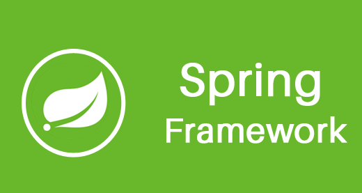

Desenvolvimento Back-End
PHP ao Java
Como autodidata iniciei programando em PHP por volta de 2001, e hoje meu foco de trabalho/estudos é o Java.
Como autodidata iniciei programando em PHP por volta de 2001, e hoje meu foco de trabalho/estudos é o Java.